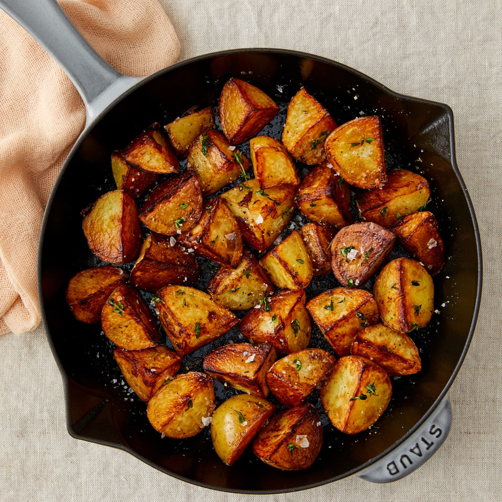

Fried Potatoes

Description
Even though it's a humble side dish, pan-fried potatoes are always the first thing on my table
to get gobbled up
at dinnertime. There's something about the way the crispy outsides give way to fluffy, tender insides that just
works. Here, they're finished with fresh herbs (thyme is my personal favorite, but rosemary perfumes the
potatoes wonderfully) and an optional pat of butter, which browns quickly, turns a little nutty, and takes the
potatoes over-the-top.
Not only are these taters right at home with whatever they're served with, but this method is also one of the
easiest ways to get crispy potatoes without deep-frying or turning on the oven, and it's mostly hands-off so
you're free to tend to the other parts of dinner. Here's how to do it.
Ingredients
- 1 pound medium red or Yukon Gold potatoes (3 to 4)
- 1 1/2 to 2 tablespoons vegetable oil
- 1 teaspoon kosher salt, divided, plus more as needed
- freshly ground black pepper
- finely chopped fresh herbs, such as 1 teaspoon thyme or oregano, or 1/2 teaspoon rosemary
- 1 tablespoon unsalted butter (optional)
Steps
- Quarter 1 pound red or Yukon gold potatoes lengthwise, then cut each piece crosswise into 1-inch wide
chunks. Heat 2 tablespoons vegetable oil in a 10 to 12-inch cast iron skillet over medium heat until
shimmering. (Alternatively, use a nonstick skillet and 1 1/2 tablespoons oil.) Add the potatoes, arrange in
a single layer cut-side down, and season with 1/2 teaspoon of the kosher salt.
- Cover with a tightfitting lid and cook undisturbed until the potatoes are tender and the bottoms are golden
brown, about 20 minutes. Meanwhile, finely chop the herb of your choice, 1 teaspoon thyme or oregano, or 1/2
teaspoon rosemary.
- Uncover and flip each piece with tongs to a second cut side. Season with the remaining 1/2 teaspoon kosher
salt and a few grinds of black pepper. Increase the heat to medium high and cook uncovered until the second
side is golden brown, 5 to 10 minutes more, moving the pieces around as needed so they brown evenly.
- Add the herb and 1 tablespoon unsalted butter if desired and cook, tossing occasionally, until the butter is
melted and the herbs are fragrant, about 1 minute. Taste and season with more salt as needed.